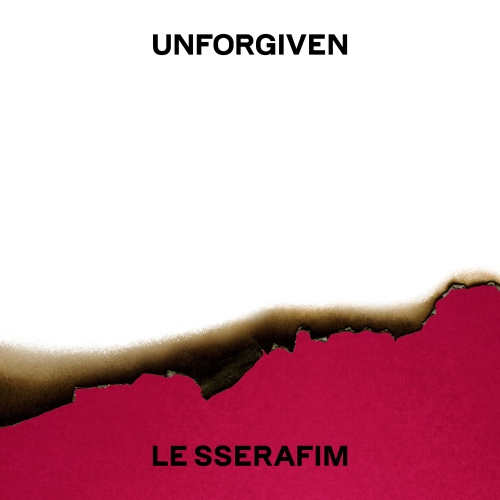
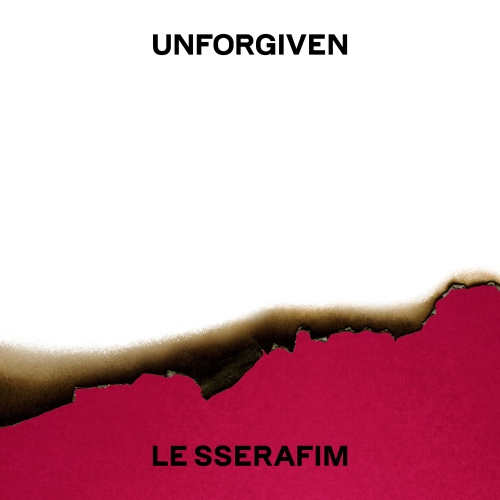

이브,프시케 그리고 푸른 수염의 아내

르세라핌이라는 걸그룹의 정규 앨범 1집의 수록곡입니다. 아무리 케이팝을 추천한다지만 걸그룹 음악을? 이라고 생각하실지도 모릅니다. 하지만 저는 꽤나 재밌게 들었던 트랙 중 하나라고 봅니다.
이 노래는 jersey club이라는 전자 음악의 하위 장르의 기법을 사용하여 만들었습니다. 그래서 들으면 매우 신나고 즐거운 곡이라고 생각하여 곡을 추천하게 되었습니다.

르세라핌이라는 걸그룹의 정규 앨범 1집의 수록곡입니다. 아무리 케이팝을 추천한다지만 걸그룹 음악을? 이라고 생각하실지도 모릅니다. 하지만 저는 꽤나 재밌게 들었던 트랙 중 하나라고 봅니다.
이 노래는 jersey club이라는 전자 음악의 하위 장르의 기법을 사용하여 만들었습니다. 그래서 들으면 매우 신나고 즐거운 곡이라고 생각하여 곡을 추천하게 되었습니다.